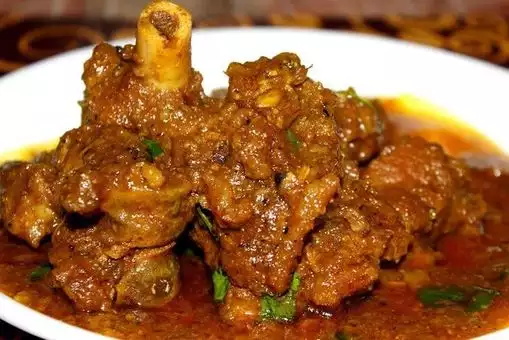

Indian Goat Curry

Description
Indian Goat Curry is a flavorful and aromatic dish that celebrates the bold spices and tender meat
characteristic of Indian cuisine. Succulent pieces of goat meat are simmered in a fragrant curry sauce made from
a blend of spices such as cumin, coriander, turmeric, and garam masala, along with onions, tomatoes, garlic, and
ginger. The slow cooking process allows the flavors to meld together, resulting in a rich and complex gravy that
coats the meat beautifully. Indian Goat Curry is often served with rice or bread, such as naan or roti, and
garnished with fresh cilantro for a vibrant finish. It's a hearty and satisfying dish that embodies the culinary
diversity and depth of Indian cooking.
Ingredients
- 3 ½ pounds baby goat meat, cut into small cubes
- salt to taste
- 3 teaspoons ground turmeric, divided
- 5 tablespoons vegetable oil
- 1 teaspoon white sugar
- 3 medium potatoes, halved
- 3 pods cardamom
- 4 whole cloves
- 1 (1 inch) piece cinnamon stick
- 3 medium onions, thinly sliced
- 2 green chile peppers, minced
- 4 cloves garlic, minced
- 1 (1 inch) piece minced fresh ginger root
- 2 medium tomatoes, sliced
- ¾ teaspoon chili powder
- 2 ¼ cups water, divided, or as needed
- freshly chopped cilantro
Steps
-
Wash goat meat well under cold running water and pat dry. Rub in salt and 1 teaspoon turmeric powder. Set
aside for 10 minutes.
-
Turn on a multi-functional pressure cooker (such as Instant Pot®) and select Saute function. Heat oil and
add sugar, allowing it to caramelize. Saute potatoes in the caramelized sugar until golden, about 5 minutes.
Remove potatoes and set aside.
-
Stir in cardamom pods, cloves, and cinnamon stick. Add sliced onion, chile peppers, garlic, and ginger. Cook
until onions are soft and golden, about 5 minutes. Stir in tomatoes, remaining 2 teaspoons turmeric powder,
and chili powder; cook, stirring often, for about 5 minutes. Add goat meat, stirring to blend everything.
Add enough water to cover the meat, about 2 cups.
-
Close and lock the lid. Select high pressure according to manufacturer's instructions; set timer for 15
minutes. Allow 10 to 15 minutes for pressure to build.
-
Release pressure using the natural-release method according to manufacturer's instructions, about 15
minutes. Release remaining pressure carefully using the quick-release method, about 5 minutes. Unlock and
remove the lid. Taste curry and adjust seasoning with salt and sugar to taste if necessary.
-
Check the goat to make sure it is tender. Add the potatoes and about 1/4 cup more water. Close and lock the
lid. Select high pressure according to manufacturer's instructions; set timer for 5 minutes. Allow 10
minutes for pressure to build.
-
Release remaining pressure carefully using the quick-release method according to manufacturer's
instructions, about 5 minutes. Unlock and remove the lid. Adjust seasoning once more. Transfer to a serving
dish and garnish with fresh cilantro.